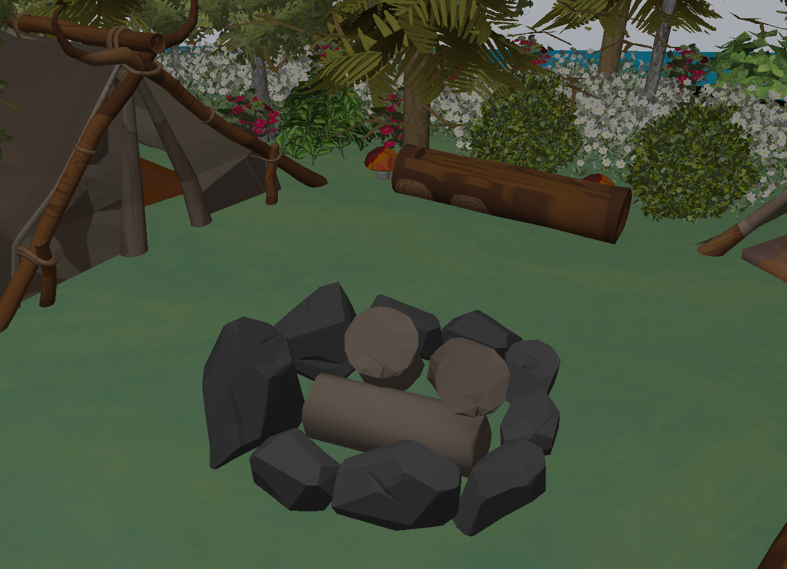
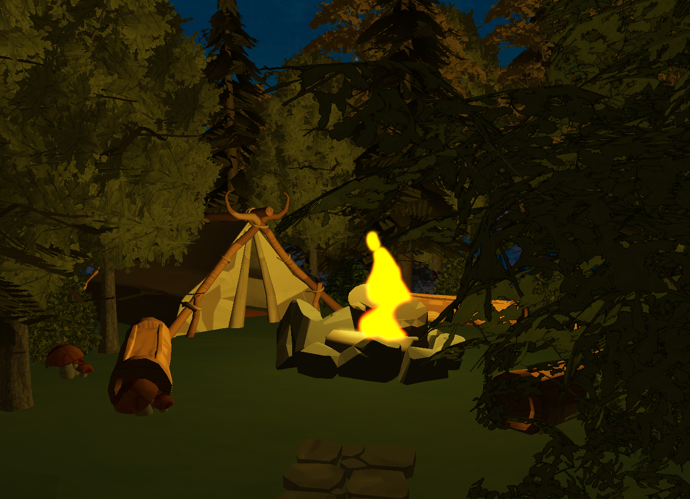

Starfall Shores - Custom OpenGL Engine


Sample render showcasing GPU instancing and bloom effects in Starfall Shores.
Project Overview
Starfall Shores is a custom-built graphics engine created for a university course on Computer Graphics. This project showcases low-level rendering capabilities using modern OpenGL and GLSL. The engine emphasizes both performance and visual fidelity, making it a solid foundation for real-time 3D rendering experiments and interactive visuals.
Key goals included writing everything from scratch, gaining deeper insight into graphics pipelines, and implementing efficient rendering strategies commonly found in game engines.
Key Features & Highlights
- Designed and built a lightweight graphics engine using modern OpenGL (core profile).
- Utilized GLSL shaders for real-time lighting and shading computations.
- Integrated GPU instancing to render large numbers of objects efficiently.
- Added post-processing effects, including a custom bloom filter for visual polish.
- Modular engine architecture allows for future extension and experimentation.
Technology Stack
Explore the Code
The full source code, including engine modules, shaders, and scene setup examples, is available on GitHub. Contributions and feedback are welcome!
View on GitHub